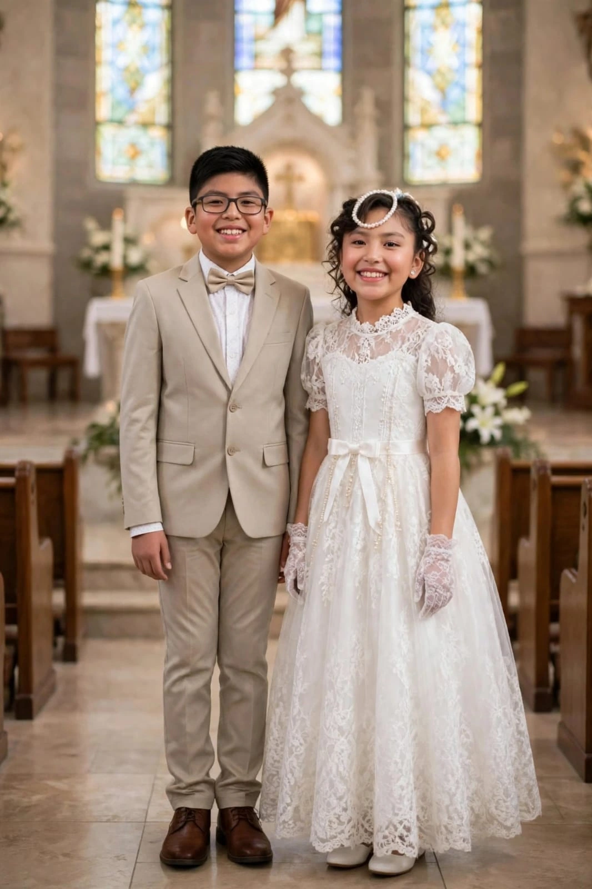
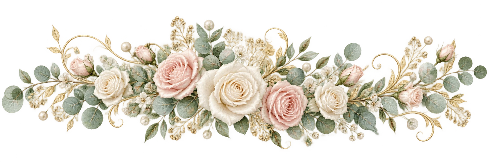

Gianluigi Liam
Gallardo Ibañez
Un camino de luz y nuevos sueños

Nuestro bautizo
13 · NOVIEMBRE · 2026
Nuestro bautizo
Viernes 13 de noviembre de 2026
17:00 · Ceremonia de bautizo
Descubre nuestro día ↓Hay momentos que se vuelven tesoros para siempre. Hoy, como hermanos, compartimos la alegría de recibir el bautismo y comenzar una nueva etapa en nuestro camino de fe.
Con el amor de nuestra familia y la bendición de Dios, queremos vivir este día rodeados de las personas que más queremos.
Gallardo Ibañez
Un camino de luz y nuevos sueñosGallardo Ibañez
Una historia que florece con amorRossio W. Ibañez R.
&Luis Miguel Gallardo B.
Gracias por guiarnos con cariño
en cada paso de nuestra vida.
Viernes 13 de noviembre
2026
17:00
Ceremonia de bautizo
Guardar en calendarioEl día de nuestro bautizo
17:00 · Ceremonia
Ver ubicación del temploAvenida Dorbigny entre avenida Franz Tamayo y calle Martín Cárdenas.
A 3 cuadras al oeste de la Playa Turquesa de Colcapirhua.
18:00 · Recepción de invitados
Ver ubicación del salónCrecer juntos es compartir una historia única.
Pasa las fotos y toca una imagen para ampliarla.
Enciende una velita para cada uno
y acompáñanos con tus mejores deseos.
Toca cada velita para encenderla.
Nos hará muy felices compartir este día contigo. Es importante que confirmes tu asistencia para poder asignarte una mesa y preparar con cariño tu lugar en nuestra celebración.
Mamá · Rossio · 65352210Un día de fe,
un recuerdo para siempre.
Gianluigi & Shantal
13 · NOVIEMBRE · 2026